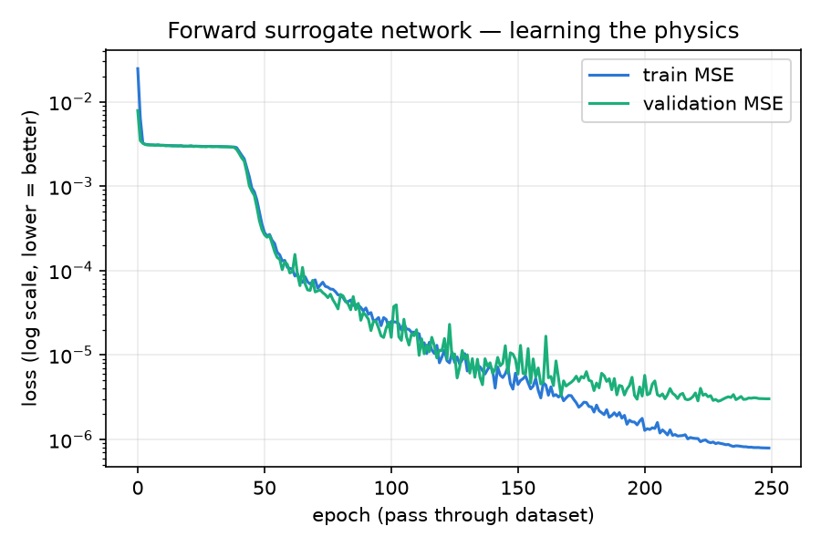
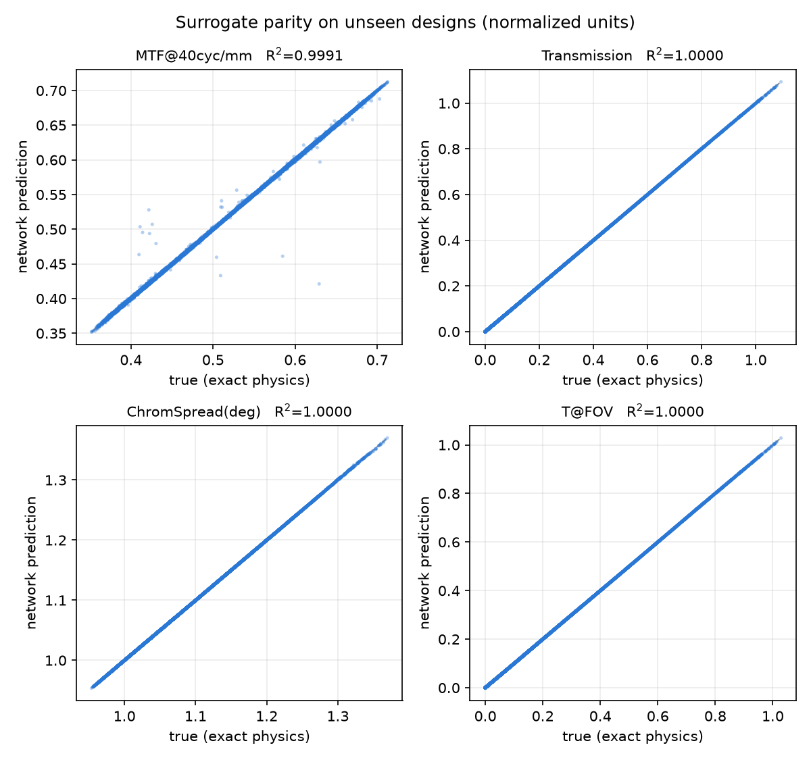
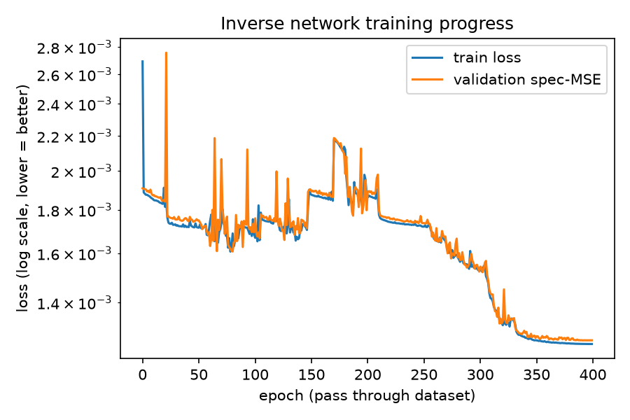
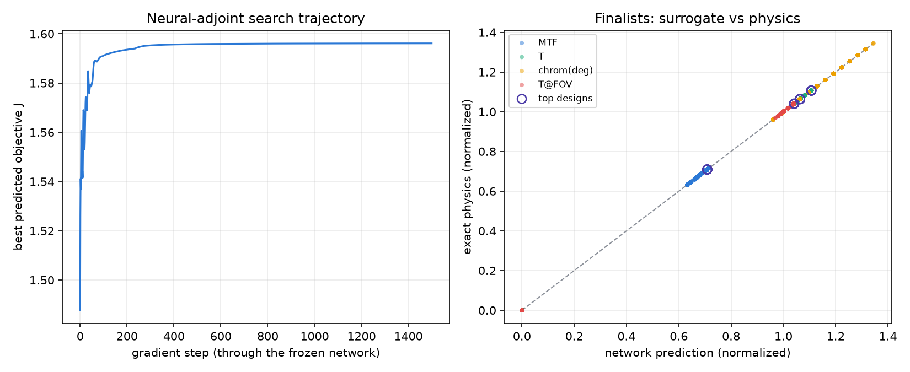
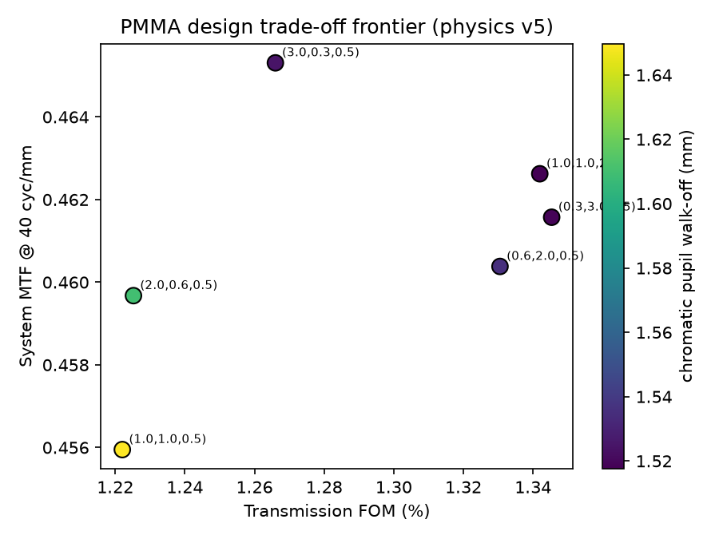

Generated 2026-07-13 12:50. Re-run python3 visuals/make_report.py
after any experiment to refresh.
| seed | pmma | samples | epochs | batch | lr | iterations | best_val_MSE | R2_MTF@40cyc/mm | R2_Transmission | R2_ChromSpread(deg) | R2_T@FOV |
|---|---|---|---|---|---|---|---|---|---|---|---|
| 0 | 1 | 100000 | 150 | 512 | 0.001 | 29400 | 0.000199 | 0.92763 | 0.99995 | 0.99991 | 0.99995 |
| 0 | 1 | 150000 | 250 | 512 | 0.001 | 73250 | 0.000000 | 0.99992 | 1.00000 | 1.00000 | 1.00000 |
| 1 | 1 | 150000 | 250 | 512 | 0.001 | 73250 | 0.000001 | 0.99961 | 1.00000 | 1.00000 | 1.00000 |
| 2 | 1 | 150000 | 250 | 512 | 0.001 | 73250 | 0.000000 | 0.99997 | 1.00000 | 1.00000 | 1.00000 |
| 3 | 1 | 150000 | 250 | 512 | 0.001 | 73250 | 0.000002 | 0.99926 | 1.00000 | 1.00000 | 1.00000 |
| 4 | 1 | 150000 | 250 | 512 | 0.001 | 73250 | 0.000002 | 0.99928 | 1.00000 | 1.00000 | 1.00000 |
| 5 | 1 | 150000 | 250 | 512 | 0.001 | 73250 | 0.000002 | 0.99940 | 1.00000 | 1.00000 | 1.00000 |
| 6 | 1 | 150000 | 250 | 512 | 0.001 | 73250 | 0.000003 | 0.99882 | 1.00000 | 1.00000 | 1.00000 |
| 7 | 1 | 150000 | 250 | 512 | 0.001 | 73250 | 0.000000 | 0.99987 | 1.00000 | 1.00000 | 1.00000 |
| 8 | 1 | 150000 | 250 | 512 | 0.001 | 73250 | 0.000000 | 0.99996 | 1.00000 | 1.00000 | 1.00000 |
| 9 | 1 | 150000 | 250 | 512 | 0.001 | 73250 | 0.000000 | 0.99997 | 1.00000 | 1.00000 | 1.00000 |
| 10 | 1 | 150000 | 250 | 512 | 0.001 | 73250 | 0.000000 | 0.99994 | 1.00000 | 1.00000 | 1.00000 |
| 11 | 1 | 150000 | 250 | 512 | 0.001 | 73250 | 0.000002 | 0.99896 | 1.00000 | 1.00000 | 1.00000 |
| 12 | 1 | 150000 | 250 | 512 | 0.001 | 73250 | 0.000000 | 0.99995 | 1.00000 | 1.00000 | 1.00000 |
| 13 | 1 | 150000 | 250 | 512 | 0.001 | 73250 | 0.000002 | 0.99912 | 1.00000 | 1.00000 | 1.00000 |
| 14 | 1 | 150000 | 250 | 512 | 0.001 | 73250 | 0.000002 | 0.99905 | 1.00000 | 1.00000 | 1.00000 |
| 15 | 1 | 150000 | 250 | 512 | 0.001 | 73250 | 0.000000 | 0.99994 | 1.00000 | 1.00000 | 1.00000 |
| 16 | 1 | 150000 | 250 | 512 | 0.001 | 73250 | 0.000000 | 0.99991 | 1.00000 | 1.00000 | 1.00000 |
| 17 | 1 | 150000 | 250 | 512 | 0.001 | 73250 | 0.000002 | 0.99912 | 1.00000 | 1.00000 | 1.00000 |
| 18 | 1 | 150000 | 250 | 512 | 0.001 | 73250 | 0.000003 | 0.99882 | 1.00000 | 0.99999 | 1.00000 |
| 19 | 1 | 150000 | 250 | 512 | 0.001 | 73250 | 0.000001 | 0.99983 | 1.00000 | 1.00000 | 1.00000 |
| 20 | 1 | 150000 | 250 | 512 | 0.001 | 73250 | 0.000002 | 0.99902 | 1.00000 | 1.00000 | 1.00000 |
| 21 | 1 | 150000 | 250 | 512 | 0.001 | 73250 | 0.000000 | 0.99992 | 1.00000 | 1.00000 | 1.00000 |
| 22 | 1 | 150000 | 250 | 512 | 0.001 | 73250 | 0.000002 | 0.99912 | 1.00000 | 1.00000 | 1.00000 |
| 23 | 1 | 150000 | 250 | 512 | 0.001 | 73250 | 0.000000 | 0.99995 | 1.00000 | 1.00000 | 1.00000 |
| 24 | 1 | 150000 | 250 | 512 | 0.001 | 73250 | 0.000002 | 0.99894 | 1.00000 | 1.00000 | 1.00000 |
| 25 | 1 | 150000 | 250 | 512 | 0.001 | 73250 | 0.000002 | 0.99932 | 1.00000 | 1.00000 | 1.00000 |
| 26 | 1 | 150000 | 250 | 512 | 0.001 | 73250 | 0.000000 | 0.99994 | 1.00000 | 1.00000 | 1.00000 |
| 27 | 1 | 150000 | 250 | 512 | 0.001 | 73250 | 0.000001 | 0.99956 | 1.00000 | 1.00000 | 1.00000 |
| 28 | 1 | 150000 | 250 | 512 | 0.001 | 73250 | 0.000001 | 0.99951 | 1.00000 | 1.00000 | 1.00000 |
| 29 | 1 | 150000 | 250 | 512 | 0.001 | 73250 | 0.000003 | 0.99905 | 1.00000 | 1.00000 | 1.00000 |
| 30 | 1 | 150000 | 250 | 512 | 0.001 | 73250 | 0.000000 | 0.99986 | 1.00000 | 1.00000 | 1.00000 |
| 31 | 1 | 150000 | 250 | 512 | 0.001 | 73250 | 0.000002 | 0.99920 | 1.00000 | 1.00000 | 1.00000 |
| 32 | 1 | 150000 | 250 | 512 | 0.001 | 73250 | 0.000002 | 0.99917 | 1.00000 | 1.00000 | 1.00000 |
| 33 | 1 | 150000 | 250 | 512 | 0.001 | 73250 | 0.000000 | 0.99996 | 1.00000 | 1.00000 | 1.00000 |
| 34 | 1 | 150000 | 250 | 512 | 0.001 | 73250 | 0.000002 | 0.99901 | 1.00000 | 1.00000 | 1.00000 |
| 35 | 1 | 150000 | 250 | 512 | 0.001 | 73250 | 0.000000 | 0.99994 | 1.00000 | 1.00000 | 1.00000 |
| 36 | 1 | 150000 | 250 | 512 | 0.001 | 73250 | 0.000002 | 0.99930 | 1.00000 | 1.00000 | 1.00000 |
| 37 | 1 | 150000 | 250 | 512 | 0.001 | 73250 | 0.000004 | 0.99865 | 1.00000 | 1.00000 | 1.00000 |
| 38 | 1 | 150000 | 250 | 512 | 0.001 | 73250 | 0.000003 | 0.99905 | 1.00000 | 0.99999 | 1.00000 |
| seed | decoder | samples | epochs | batch | lr | iterations | best_val_specMSE |
|---|---|---|---|---|---|---|---|
| 0 | physics | 100000 | 300 | 256 | 0.001 | 117300 | 0.001239 |
| 1 | physics | 100000 | 300 | 256 | 0.001 | 117300 | 0.001595 |
| 2 | physics | 100000 | 300 | 256 | 0.001 | 117300 | 0.001081 |
| 3 | physics | 100000 | 300 | 256 | 0.001 | 117300 | 0.001304 |
| 4 | physics | 100000 | 300 | 256 | 0.001 | 117300 | 0.001083 |
| 0 | surrogate | 150000 | 400 | 256 | 0.001 | 234400 | 0.001216 |
| 1 | surrogate | 150000 | 400 | 256 | 0.001 | 234400 | 0.001213 |
| 2 | surrogate | 150000 | 400 | 256 | 0.001 | 234400 | 0.001053 |
| 3 | surrogate | 150000 | 400 | 256 | 0.001 | 234400 | 0.001605 |
| 4 | surrogate | 150000 | 400 | 256 | 0.001 | 234400 | 0.001051 |
| 0 | physics | 150000 | 400 | 256 | 0.001 | 234400 | 0.001253 |
| 5 | surrogate | 150000 | 400 | 256 | 0.001 | 234400 | 0.001234 |
| 6 | surrogate | 150000 | 400 | 256 | 0.001 | 234400 | 0.001418 |
| 7 | surrogate | 150000 | 400 | 256 | 0.001 | 234400 | 0.001472 |
| 8 | surrogate | 150000 | 400 | 256 | 0.001 | 234400 | 0.001300 |
| 9 | surrogate | 150000 | 400 | 256 | 0.001 | 234400 | 0.001035 |
| 10 | surrogate | 150000 | 400 | 256 | 0.001 | 234400 | 0.001271 |
| 11 | surrogate | 150000 | 400 | 256 | 0.001 | 234400 | 0.001074 |
| 12 | surrogate | 150000 | 400 | 256 | 0.001 | 234400 | 0.001044 |
| 13 | surrogate | 150000 | 400 | 256 | 0.001 | 234400 | 0.001135 |
| 14 | surrogate | 150000 | 400 | 256 | 0.001 | 234400 | 0.001089 |
| 15 | surrogate | 150000 | 400 | 256 | 0.001 | 234400 | 0.001255 |
| 16 | surrogate | 150000 | 400 | 256 | 0.001 | 234400 | 0.001291 |
| 17 | surrogate | 150000 | 400 | 256 | 0.001 | 234400 | 0.001386 |
| 18 | surrogate | 150000 | 400 | 256 | 0.001 | 234400 | 0.001495 |
| 19 | surrogate | 150000 | 400 | 256 | 0.001 | 234400 | 0.001172 |
| 20 | surrogate | 150000 | 400 | 256 | 0.001 | 234400 | 0.001117 |
| 21 | surrogate | 150000 | 400 | 256 | 0.001 | 234400 | 0.001216 |
| 22 | surrogate | 150000 | 400 | 256 | 0.001 | 234400 | 0.001195 |
| 23 | surrogate | 150000 | 400 | 256 | 0.001 | 234400 | 0.001232 |
| 24 | surrogate | 150000 | 400 | 256 | 0.001 | 234400 | 0.001229 |
| 25 | surrogate | 150000 | 400 | 256 | 0.001 | 234400 | 0.001064 |
| 26 | surrogate | 150000 | 400 | 256 | 0.001 | 234400 | 0.001057 |
| 27 | surrogate | 150000 | 400 | 256 | 0.001 | 234400 | 0.001253 |
| 28 | surrogate | 150000 | 400 | 256 | 0.001 | 234400 | 0.001218 |
| 29 | surrogate | 150000 | 400 | 256 | 0.001 | 234400 | 0.001067 |
| 30 | surrogate | 150000 | 400 | 256 | 0.001 | 234400 | 0.001289 |
| 31 | surrogate | 150000 | 400 | 256 | 0.001 | 234400 | 0.001396 |
| 32 | surrogate | 150000 | 400 | 256 | 0.001 | 234400 | 0.001507 |
| 33 | surrogate | 150000 | 400 | 256 | 0.001 | 234400 | 0.000984 |
| 34 | surrogate | 150000 | 400 | 256 | 0.001 | 234400 | 0.001022 |
| 35 | surrogate | 150000 | 400 | 256 | 0.001 | 234400 | 0.001404 |
| 36 | surrogate | 150000 | 400 | 256 | 0.001 | 234400 | 0.001263 |
| 37 | surrogate | 150000 | 400 | 256 | 0.001 | 234400 | 0.001460 |
| 38 | surrogate | 150000 | 400 | 256 | 0.001 | 234400 | 0.001264 |
| rank | J_physics | J_surrogate | MTF | T | chrom_deg | T_fov | n | alpha(1/mm) | sigma(nm) | Lc(nm) | t(mm) | period(nm) | depth(nm) | duty | tir_guided_green |
|---|---|---|---|---|---|---|---|---|---|---|---|---|---|---|---|
| 1 | 1.5962 | 1.5961 | 0.70899 | 0.11069 | 31.91 | 0.10406 | 1.5 | 5.2517e-05 | 0.91715 | 3.9989e+05 | 1.94 | 437.98 | 400 | 0.5001 | 1 |
| 2 | 1.5961 | 1.5960 | 0.70899 | 0.11068 | 31.91 | 0.10406 | 1.5 | 5.1903e-05 | 0.91564 | 3.9976e+05 | 1.9366 | 437.98 | 400 | 0.5001 | 1 |
| 3 | 1.5961 | 1.5960 | 0.70899 | 0.11068 | 31.91 | 0.10406 | 1.5 | 5.2212e-05 | 0.91645 | 3.9977e+05 | 1.9388 | 437.98 | 399.99 | 0.5001 | 1 |
| 4 | 1.5961 | 1.5960 | 0.709 | 0.11068 | 31.911 | 0.10405 | 1.5 | 5.195e-05 | 0.91581 | 3.9986e+05 | 1.9372 | 437.98 | 400 | 0.5001 | 1 |
| 5 | 1.5961 | 1.5960 | 0.70899 | 0.11068 | 31.91 | 0.10405 | 1.5 | 5.2397e-05 | 0.91666 | 3.9996e+05 | 1.9386 | 437.98 | 400 | 0.5001 | 1 |
| date | J | MTF | T | chrom_deg | T_fov | n | alpha(1/mm) | sigma(nm) | Lc(nm) | t(mm) | period(nm) | depth(nm) | duty |
|---|---|---|---|---|---|---|---|---|---|---|---|---|---|
| 2026-07-13 | 1.59624076 | 0.70899 | 0.11069 | 31.91 | 0.10406 | 1.5 | 5.1909e-05 | 0.91608 | 3.9968e+05 | 1.9384 | 437.98 | 400 | 0.5001 |
| rank | J | MTF | T | chrom_deg | T_fov | T_TE | T_TM | fov_lo_deg | fov_hi_deg | n | alpha(1/mm) | sigma(nm) | Lc(nm) | t(mm) | period(nm) | depth(nm) | duty |
|---|---|---|---|---|---|---|---|---|---|---|---|---|---|---|---|---|---|
| 1 | 1.5913 | 0.70907 | 0.1103 | 31.912 | 0.10369 | 0.1103 | 0.1103 | -1.541 | 2.872 | 1.4992 | 5.4226e-05 | 0.70793 | 3.8968e+05 | 1.8137 | 438.21 | 399.86 | 0.5 |
| 2 | 1.5899 | 0.70907 | 0.1102 | 31.912 | 0.10359 | 0.1102 | 0.1102 | -1.572 | 2.873 | 1.4999 | 5.0762e-05 | 0.70742 | 3.9448e+05 | 1.9849 | 437.99 | 399.07 | 0.5 |
| 3 | 1.5883 | 0.70906 | 0.11007 | 31.912 | 0.10347 | 0.11007 | 0.11007 | -1.564 | 2.873 | 1.4998 | 5.0397e-05 | 0.70316 | 3.967e+05 | 1.9989 | 438.04 | 398.98 | 0.5 |
| 4 | 1.5882 | 0.70905 | 0.11006 | 31.912 | 0.10346 | 0.11006 | 0.11006 | -1.564 | 2.873 | 1.4998 | 5.0377e-05 | 0.70899 | 3.9339e+05 | 1.968 | 438.04 | 398.96 | 0.5 |
| 5 | 1.5878 | 0.70905 | 0.11003 | 31.912 | 0.10343 | 0.11003 | 0.11003 | -1.564 | 2.873 | 1.4998 | 5.2008e-05 | 0.70259 | 3.955e+05 | 1.9499 | 438.04 | 398.9 | 0.5 |
| w_mtf | w_T | w_ca | MTF | T | chrom_deg | T_fov | n | alpha | sigma | Lc | t | period | depth | duty |
|---|---|---|---|---|---|---|---|---|---|---|---|---|---|---|
| 3.0 | 0.3 | 0.5 | 0.7158482670783997 | 0.10913613438606262 | 32.891292572021484 | 0.10259713977575302 | 1.4982839822769165 | 7.170106255216524e-05 | 0.7348897457122803 | 396380.1875 | 1.864790916442871 | 435.9828796386719 | 398.4023742675781 | 0.4999977946281433 |
| 2.0 | 0.6 | 0.5 | 0.7158709168434143 | 0.10937955975532532 | 32.8907585144043 | 0.10282585024833679 | 1.4989451169967651 | 7.168103184085339e-05 | 0.7323998212814331 | 396604.78125 | 1.8643121719360352 | 435.7918395996094 | 398.359375 | 0.500002384185791 |
| 1.0 | 1.0 | 0.5 | 0.7158747315406799 | 0.10962507873773575 | 32.88901138305664 | 0.10305652767419815 | 1.4995778799057007 | 7.167918374761939e-05 | 0.7294686436653137 | 396902.9375 | 1.863741397857666 | 435.61212158203125 | 398.3424072265625 | 0.500004768371582 |
| 0.6 | 2.0 | 0.5 | 0.6687098145484924 | 0.10962385684251785 | 29.86359977722168 | 0.10305348038673401 | 1.4981050491333008 | 5.53001300431788e-05 | 0.716786801815033 | 395902.28125 | 1.9962782859802246 | 444.838134765625 | 399.4021301269531 | 0.499999463558197 |
| 0.3 | 3.0 | 0.5 | 0.668449342250824 | 0.10998021811246872 | 29.857046127319336 | 0.10338849574327469 | 1.4989910125732422 | 5.5284308473346755e-05 | 0.7164741158485413 | 395968.75 | 1.9962923526763916 | 444.5980529785156 | 399.4016418457031 | 0.499999463558197 |
| 1.0 | 1.0 | 2.0 | 0.6975987553596497 | 0.10915554314851761 | 28.814680099487305 | 0.10261386632919312 | 1.4986778497695923 | 5.12138576596044e-05 | 0.7170105576515198 | 392946.125 | 1.9494402408599854 | 448.5704345703125 | 398.1054992675781 | 0.4997783303260803 |
| depth_nm | scalar_eta1 | rcwa_TE | rcwa_TM | rcwa_unpol |
|---|---|---|---|---|
| 100 | 0.03299697031818189 | 0.10214760202133792 | 0.006019381078268699 | 0.05408349154980331 |
| 200 | 0.12124185550557484 | 0.265620011333515 | 0.026470334084962806 | 0.1460451727092389 |
| 300 | 0.23599620470141472 | 0.3290466710498798 | 0.1198468160421544 | 0.2244467435460171 |
| 400 | 0.3398883082772014 | 0.3010971103761334 | 0.13967865729410775 | 0.2203878838351206 |





Open waveguide_3d.html to rotate the winning waveguide in 3D (drag to rotate, scroll to zoom). A printable mesh is in results/waveguide_model.stl.